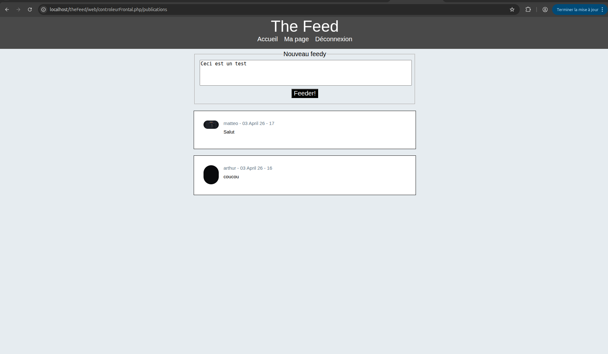
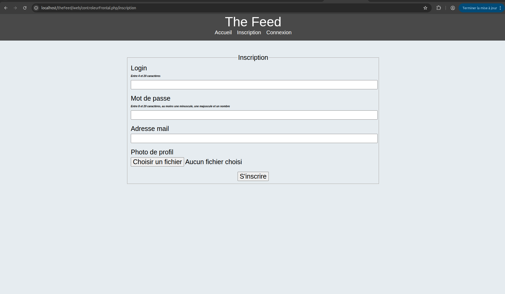

Du MVC artisanal aux composants professionnels
Retour au portfolioLes travaux dirigés de développement web constituent un fil rouge sur les deux premières années du BUT. En S3, ils m'ont permis de construire itérativement un site de covoiturage complet en PHP pur avec architecture MVC. En S4, la progression s'est accélérée avec l'introduction de composants Symfony et du langage de gabarit Twig.
Durée : S3 & S4 (progressif) | Individuel | Contrainte : progression notée, complexité croissante


Construction pas à pas d'un site de covoiturage en partant de zéro, chaque TD enrichissant le projet précédent.
Montée en puissance vers une approche plus industrielle du développement PHP, avec l'introduction de composants professionnels.
symfony/routing pour gérer les URLs de façon déclarative et propre.Techniques
Humaines
La progression du PHP artisanal vers les composants Symfony m'a fait comprendre pourquoi les frameworks existent : non pas pour masquer la complexité, mais pour la gérer de façon standardisée et maintenable. Reconstruire moi-même un routeur en S3 m'a donné une base solide pour comprendre et apprécier ce que Symfony propose en S4.
Twig a été une vraie révélation : la séparation entre logique et présentation, que j'avais déjà pratiquée en MVC, devient encore plus nette et élégante avec un vrai langage de gabarit. L'héritage de templates évite une quantité énorme de duplication de code HTML.